Microwave circuit hardware
design from scratch,
built to transmit, receive, and match
Welcome — I'm Flatrim, an Electrical Engineering student at Iowa State (GPA 3.55, exp. May 2027) and a researcher at the Applied Microwave Testing Lab. I design radar front-ends, VNA hardware, and RF PCBs, then write the software that drives them on the bench. Open any project below to see the board, my role, and what I learned building it.
I want to build the hardware that lets systems see and talk at microwave frequencies — radar front-ends, test instruments, and the mixed-signal boards that connect them to software.
Most of what I've learned has come from carrying a design the whole way: block diagram, simulation in ADS, schematic and stackup in KiCad, layout, and then the slow part — bring-up and measurement in the lab. After graduating I want to join an RF/microwave hardware team (radar, test & measurement, or wireless) where I can keep doing that full loop on harder problems and learn from engineers who have shipped real products.
Longer term I'd like to grow toward graduate-level depth in electromagnetics and microwave circuit design and lead the design of measurement systems — like the VNA and SAR imaging scanner I work on now — that make high-frequency hardware cheaper and easier to test.
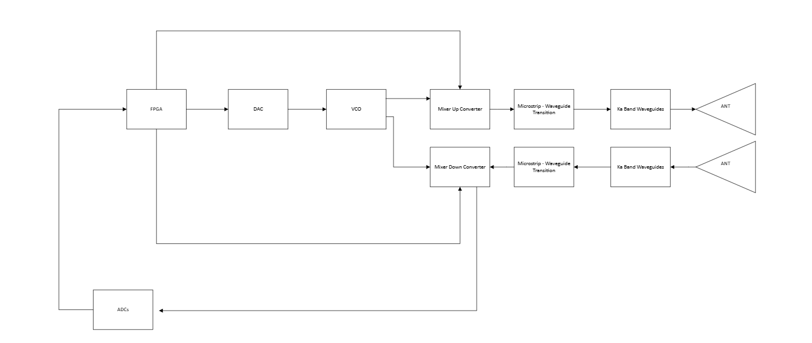
System block diagram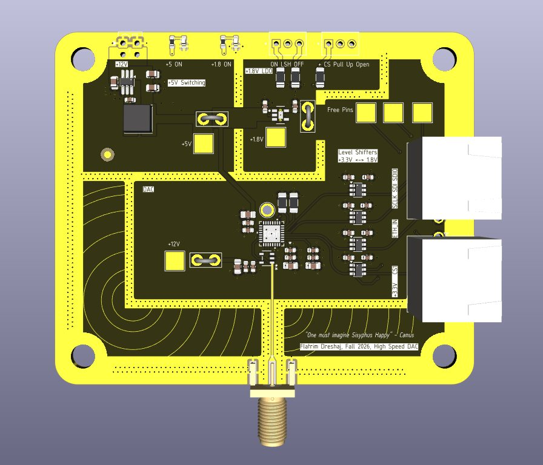
AD3551R fast-sweep DAC — 3D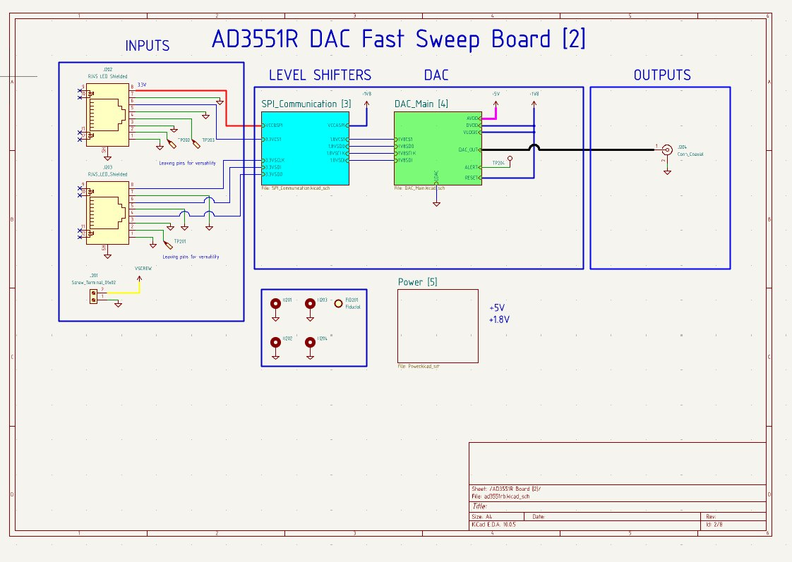
AD3551R board — top sheet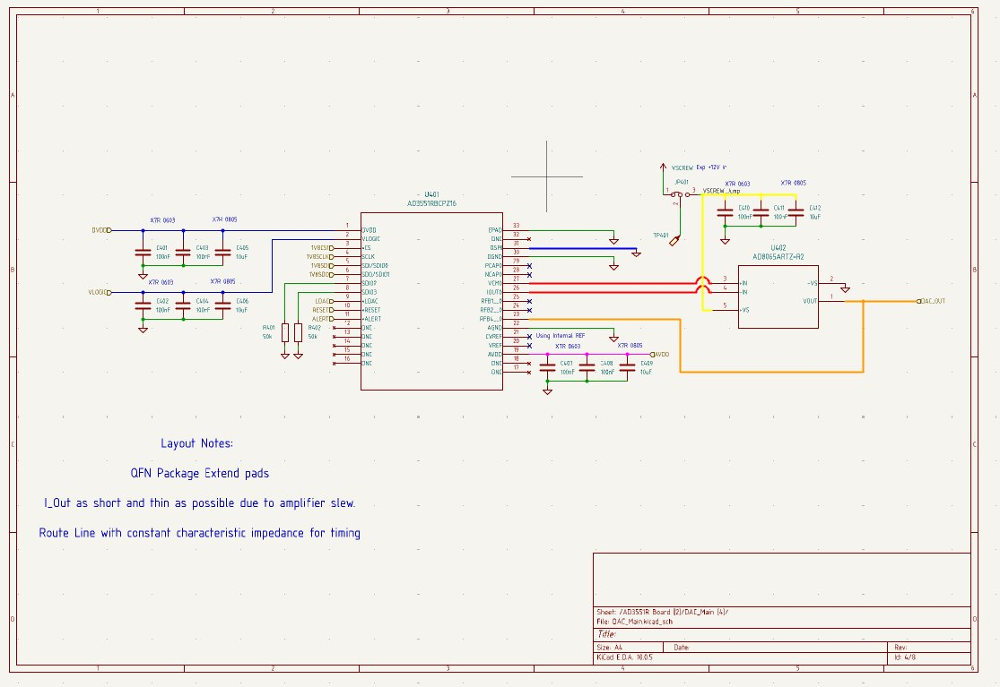
AD3551R + AD8065 buffer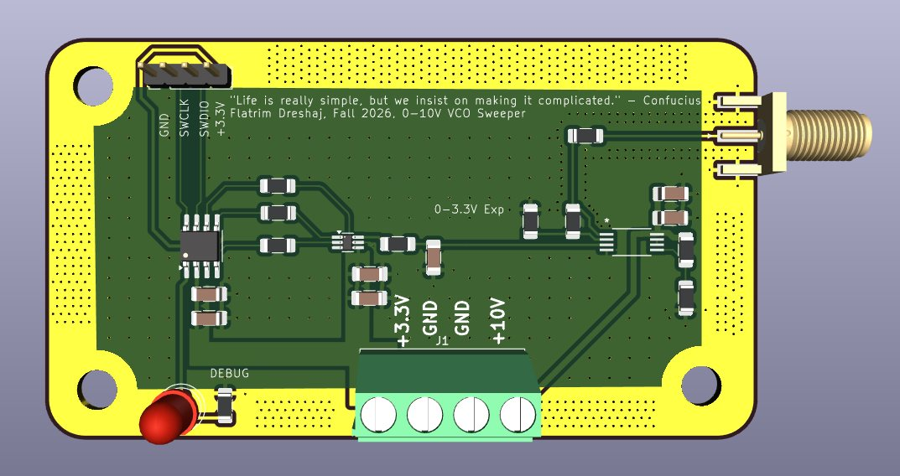
Simplified 0–10 V sweeper — 3D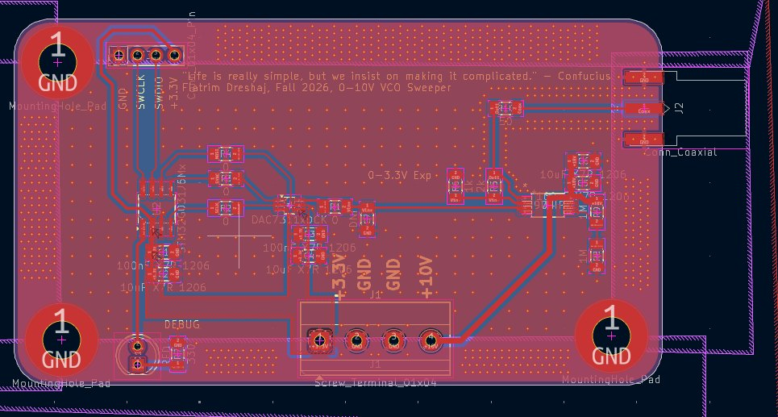
Simplified sweeper — layout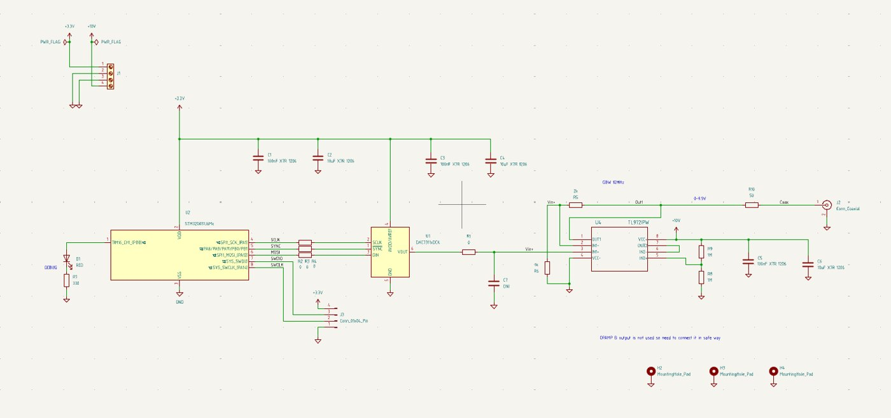
Simplified sweeper — schematicDescription
A homodyne MIMO FMCW radar that sweeps the full 24–40 GHz band. A DAC ramp tunes a wideband VCO to make a linear chirp, which is up-converted, sent out through a waveguide antenna, and mixed with the returning echo. The beat frequency between the two chirps gives range; sweeping 16 GHz gives a range resolution of ΔR = c/2B ≈ 9.4 mm.
My hardware on the project is the sweep source — the DAC boards that generate the VCO tuning ramp:
- AD3551R fast-sweep DAC: hierarchical KiCad design with SPI over shielded RJ45, per-line TXB0101 3.3 V→1.8 V translators, an AD8065 transimpedance output buffer, 5 V switcher + 1.8 V LDO, and jumpers to bring up each rail one at a time
- Simplified sweeper: after reviewing risk, I replaced the current-output DAC with a voltage-output DAC driven by a small STM32 over SPI, amplified ×3 by a non-inverting stage for a 0–10 V tuning sweep — a minimum viable board that is far easier to bring up
My role — Team Leader
- Came up with the project with Dr. Tayeb over the summer and got the team started at the beginning of the semester
- Defined the system block diagram and selected the main IC for each block
- Split the radar into subsystems with owners (RF boards, VCO/PLL, antenna, signal processing, FPGA), set weekly plans, and tracked status in the weekly reports
- Led the shift to a minimum-viable-product plan to cut risk; designed both DAC boards
Skills & knowledge gained
- Leading a seven-person team: delegating subsystems, keeping work moving, and reporting progress to a client
- Scoping down to a minimum viable product when the first design is more than the project needs
- Precision DAC layout: extended QFN pads, short low-capacitance output traces, level translation and staged power bring-up
Big-picture contribution
Draft — please check: Wideband mm-wave radars are expensive and closed. This project gives the lab an open, millimeter-resolution 24–40 GHz radar built from off-the-shelf parts that future teams can extend to more channels and MIMO imaging.
Supporting documents
Weekly report 1 (PDF) ↗ Weekly report 2 (PDF) ↗ Weekly report 3 (PDF) ↗ Earlier FMCW radar boards ↗ To add: team website and design document links2.3–2.8 GHz VCO board — exploded from the fab Gerbers

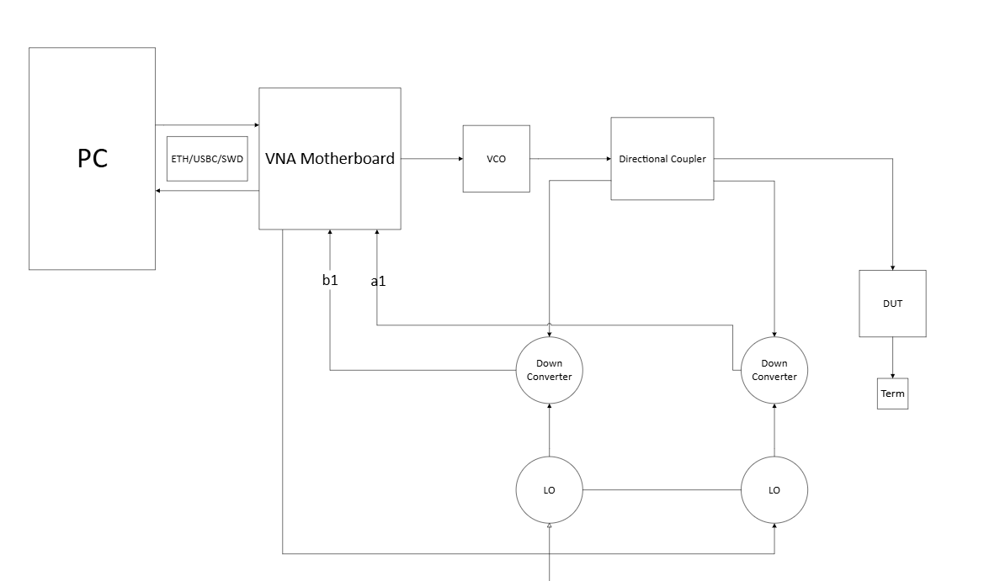
System block diagram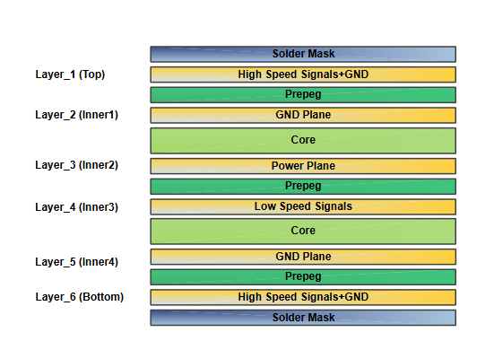
6-layer stackup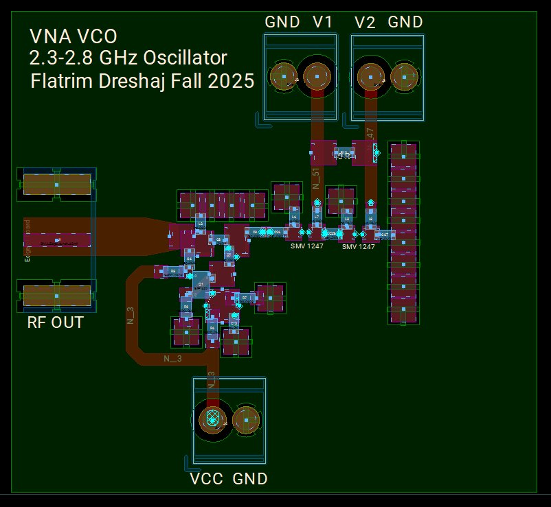
2.3–2.8 GHz VCO layout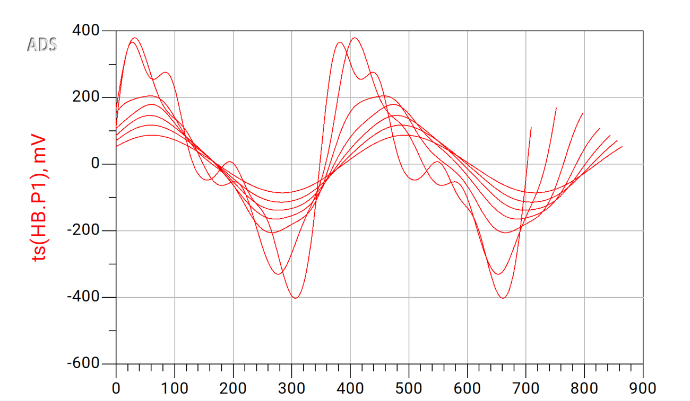
VCO output vs. tuning VCO test board — KiCad 3D
VCO test board — KiCad 3D
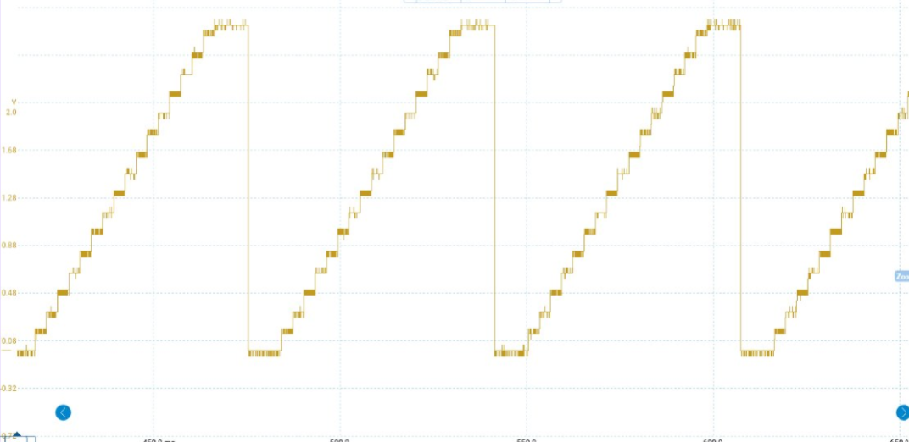
Stepped VCO tune sweep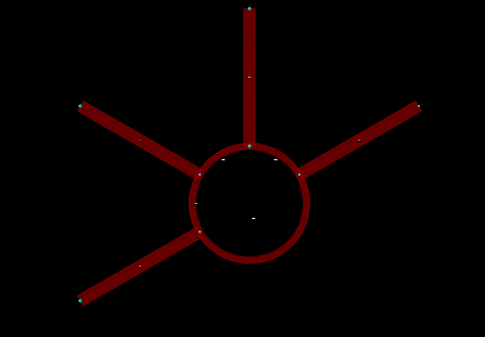
Rat-race coupler layout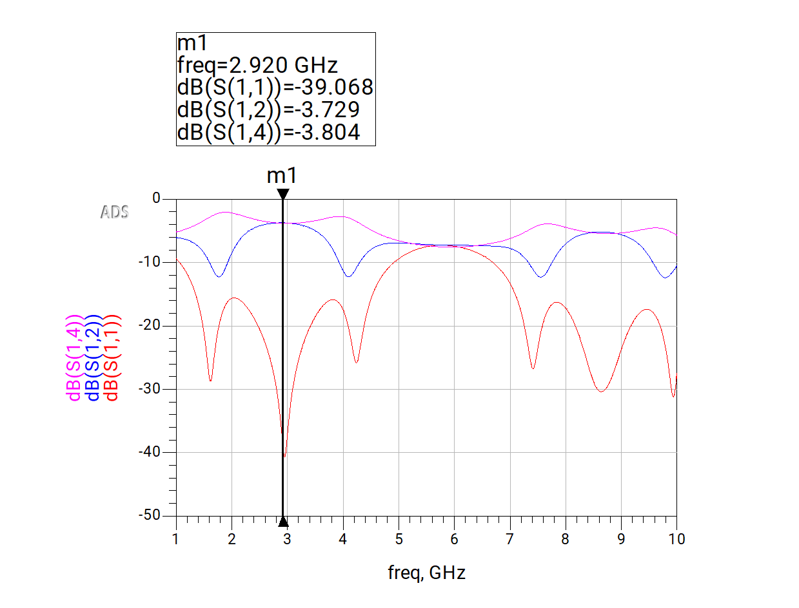
Rat-race S-parameters (ADS)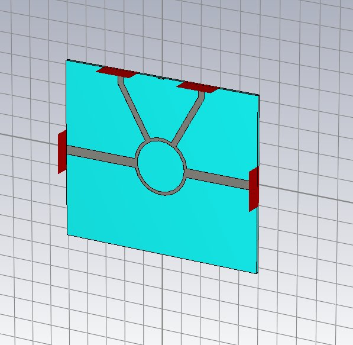
Rat-race in CST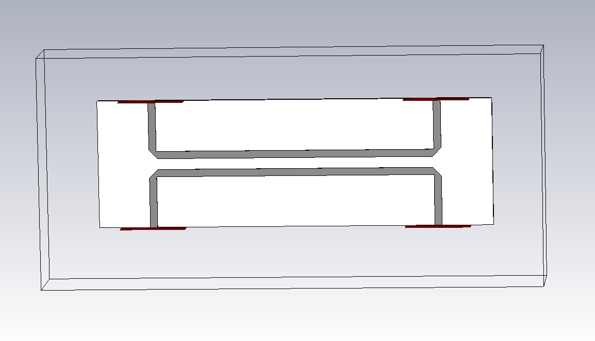
Edge-coupled coupler in CST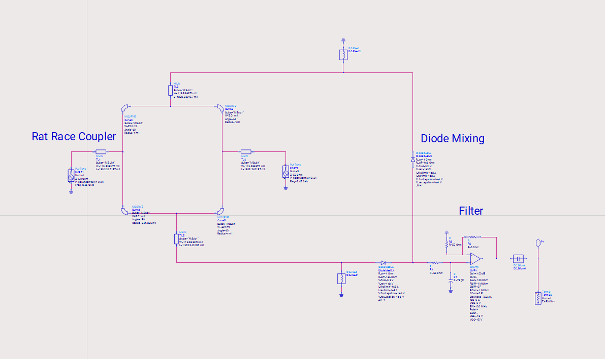
Balanced 180° diode mixer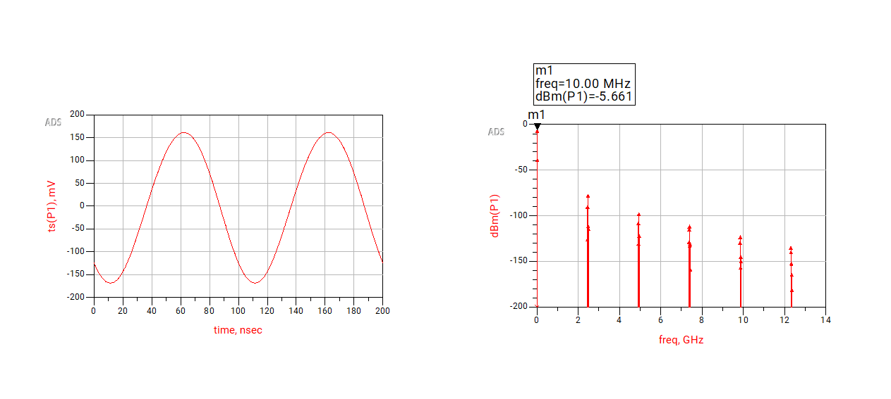
Mixer IF output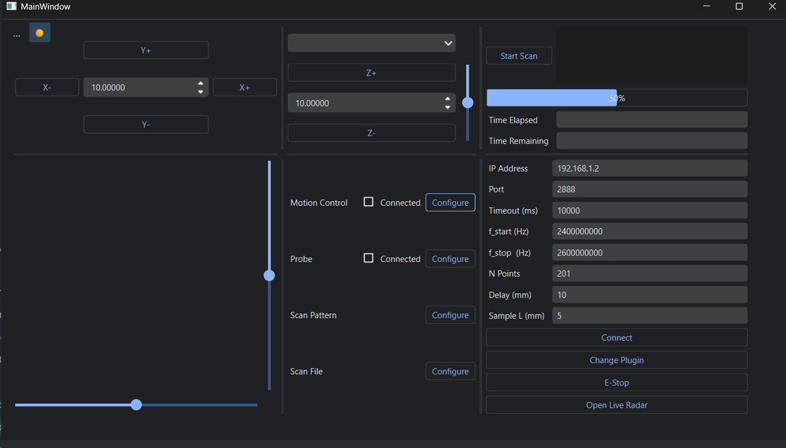
VNA plugin in the scanner GUIDescription
- Signal chain: VCO → directional coupler → DUT and reference downconverters → balanced 180° diode mixer (≈6 dB conversion loss) → anti-alias filter → balun → dual AD9238 ADC at 20 MSPS → STM32H7 → Ethernet → PC, where an FFT recovers magnitude and phase
- VCO: modified Colpitts, common-base, biased at 5 mA for minimum noise figure; two SMV1247 varactors (0.7–7 pF) tune 2.3–2.8 GHz at about 0 dBm, with simulated phase noise of −165 to −173 dBc/Hz at 1 MHz
- Couplers: branch-line, rat-race (Zring = 70.7 Ω) and modified rat-race; a 10 dB edge-coupled design (Z0e = 69.4 Ω, Z0o = 36.1 Ω) hit 10 ± 0.5 dB coupling but only ≈10 dB directivity, so I derived the even/odd phase-velocity limit and wrote a Kirschning–Jansen + SciPy optimizer for gap and length
- Motherboard: 6-layer stackup from the STM32H7 guidelines to fan out every ADC line; USB-C, Ethernet and SWD; the tune voltage comes from my STM32F1 + DAC stepped-sweep board and power from my 20 V / 60 W USB-C PD board
- Software: SOLT one-port calibration (3-term error model, ideal or measured standards, coax de-embedding), NRW extraction of complex εr and μr, and a threaded
vna_plugin.pythat runs SOL calibration at scan start and writes raw, corrected and material data per point to the lab scanner's HDF5 files
My role
Sole designer across every layer of the instrument — RF circuits in ADS and CST, the motherboard in KiCad, firmware protocol, calibration math, and the scanner integration.
Skills & knowledge gained
- Even/odd-mode coupler analysis and why microstrip limits directivity
- Oscillator design against the Barkhausen criterion and varactor tuning
- VNA error models, SOLT calibration and de-embedding
- Knowing when full-wave simulation disagrees with circuit models — and why (port impedance, conductor loss)
- Mixed-signal layout for high-speed ADCs
Resources used
Keysight ADS, CST Microwave Studio, KiCad 9, Python (NumPy, SciPy, scikit-rf); R. K. Mongia's RF and Microwave Coupled-Line Circuits, Pozar's Microwave Engineering, Kirschning & Jansen coupled-line models, Skyworks, Analog Devices and ST datasheets; guidance from Prof. Nathan Neihart.
Next steps
- Fabricate and measure the VCO and coupler boards
- Lange coupler or capacitive compensation for better directivity
- End-to-end validation of the full chain, then an FPGA back end for N-port measurements
- ADAR2001/2004 front ends to reach Ka-band
Description
- Four transistor oscillators on one 117 × 42 mm board, each with its own +5 V / GND feed and RF output, so the topologies can be measured against each other
- Common base, common emitter and common collector feedback oscillators, plus a reflection (negative-resistance) oscillator
- Laid out in ADS and exported as fabrication Gerbers — the exploded view above is built straight from those files (63 plated holes)
My role
One of three designers with Matthew Smith and Ryan Teen — oscillator design and simulation in ADS and the board layout for fabrication. The common-base design led directly to the VNA's VCO.
Skills & knowledge gained
- Oscillation start-up conditions and negative-resistance design
- How the choice of grounded terminal changes gain, stability and tuning
- Preparing an RF layout for fabrication from ADS
Resources used
Keysight ADS, Pozar's Microwave Engineering, EE 514 lectures and lab equipment.
 Up/down converter board — KiCad 3D
Up/down converter board — KiCad 3D
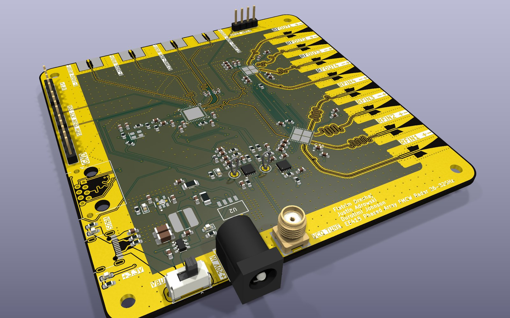
Up/down converter — angled STM32F1 VCO sweep board — KiCad 3D
STM32F1 VCO sweep board — KiCad 3D
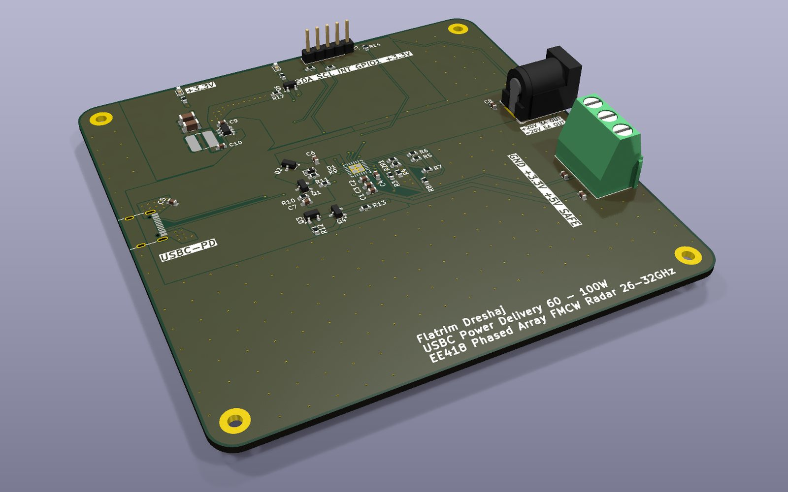
USB-C PD power board — KiCad 3D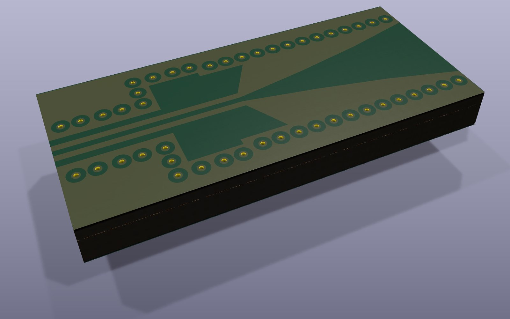
Differential Vivaldi antenna Bistatic block diagram
Bistatic block diagram
Description
- The up/down converter is the heart of the radar: an ADF4372 synthesizer (62.5 MHz–8 GHz and 8–16 GHz outputs) provides the LO, an ADAR2001 drives four differential RF outputs and an ADAR2004 receives four differential inputs
- All eight RF pairs are meandered to equal length so the channels stay in phase for beam steering
- LT3045 ultra-low-noise LDOs for the RF rails, RJ45 jacks for SPI and the differential IF out, USB-C and 20 V input
- STM32F1 + DAC VCO sweep board (also reused as the VNA's stepped-frequency source), a 20 V USB-C Power Delivery board (60 W, 100 W with a few part swaps), and differential Vivaldi antennas for the array
My role
System architect and lead board designer on a three-person team — part selection, block diagrams, the up/down converter and power boards, and RF layout.
Skills & knowledge gained
- Millimeter-wave part selection and link-budget trade-offs
- Phase-matched differential routing, low-noise power, ESD protection and power sequencing
- Splitting a large design into boards that can be brought up one at a time
Resources used
KiCad 9, STM32CubeIDE, Analog Devices / MACOM / Mini-Circuits datasheets and eval boards, EE 418 course material.
 Phase-control board (4-layer)
Phase-control board (4-layer)
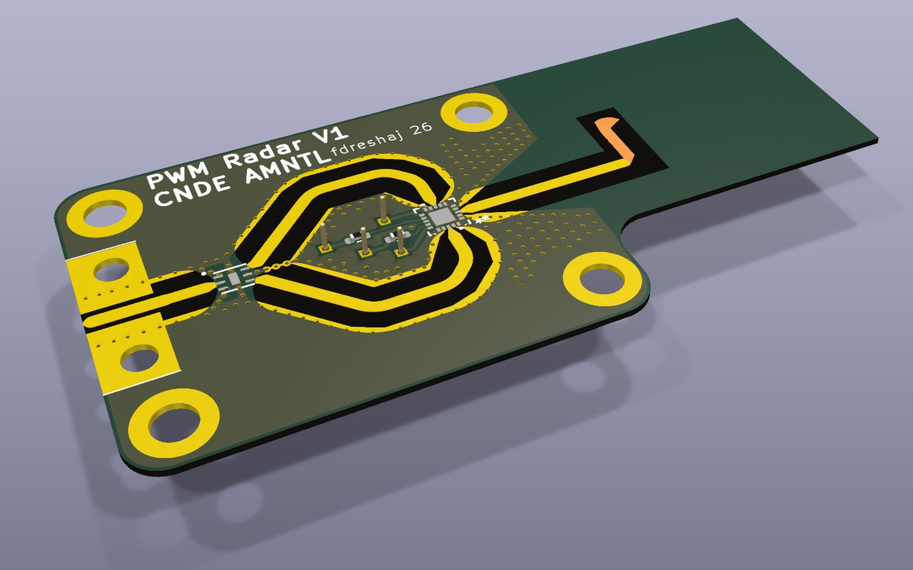
V1 with integrated antenna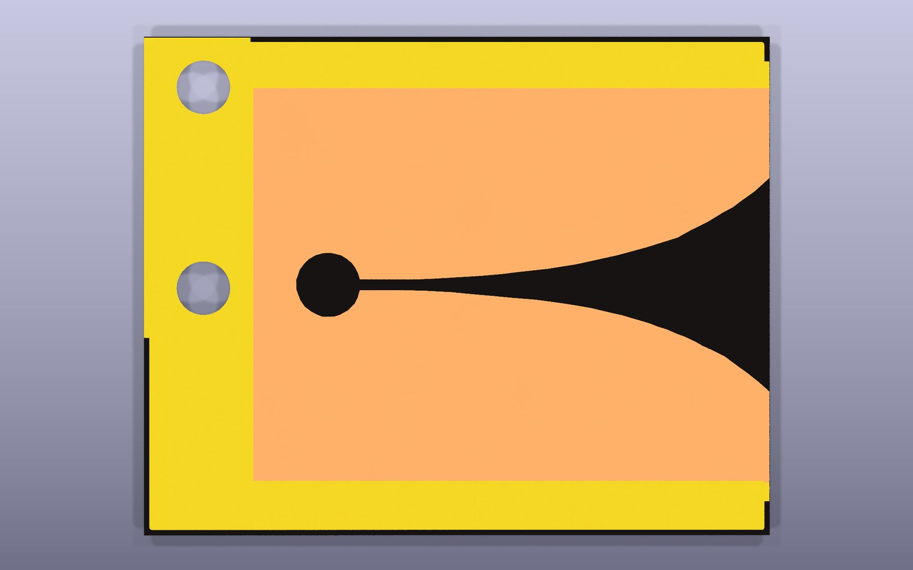
Generated Vivaldi — flare side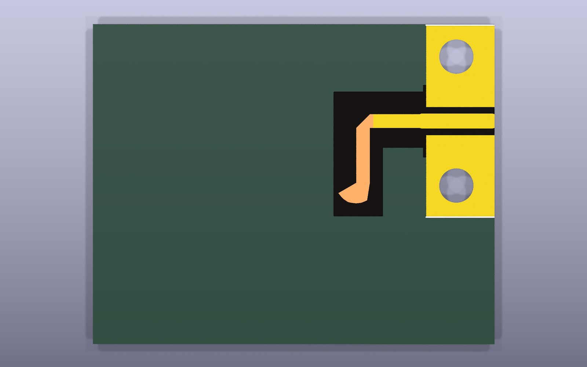
Generated Vivaldi — feed side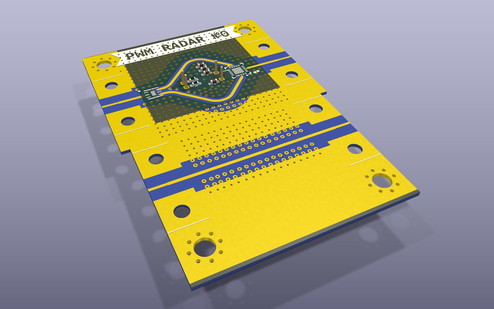
Rev 0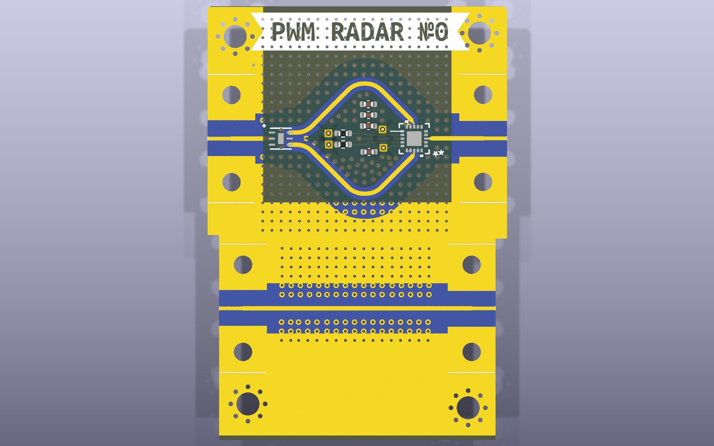
Rev 0 — topDescription
- PWM signals with controlled phase offsets drive each element; the relative phase sets where the beam points, with no moving parts
- Antenna generator: a KiCad (pcbnew) Python script draws an exponentially tapered Vivaldi with a microstrip-to-slotline feed and radial stub (λ/4 at 17 GHz) directly onto the board; a PyQt GUI previews the geometry live as parameters change
- Several board revisions tracked in the repo, from Rev 0 to V1 with the antenna on the same PCB
My role
Sole designer — beam-steering concept, antenna design and generator tooling, schematic, and every PCB revision. The antenna work builds on the 9–20 GHz Vivaldis I designed and measured with Anritsu VNAs in the lab.
Skills & knowledge gained
- Array factor and phase-steering theory applied to real hardware
- Vivaldi flare and slotline feed design; scripting KiCad's API to make geometry reproducible
- Iterating a board across revisions and documenting changes
Resources used
KiCad 9 and its Python API, PyQt, CST for antenna simulation, Anritsu VNAs, Balanis' Antenna Theory.


Description
- ESP32-S3 with external flash/PSRAM, Teseo-LIV3R GNSS receiver, and BMI323 IMU
- GNSS RF front end: chip antenna → SAW filter → BGA725 LNA
- USB-C with ESD protection, TLV62569 buck and LDO rails
My role
Sole designer — schematic, RF front end, and 4-layer layout for the AMNTL scanning setup.
Skills & knowledge gained
- Laying out an RF receive path next to a noisy MCU
- Sensor fusion requirements (GNSS + IMU)
- USB-C power and ESD design practices
Resources used
KiCad, Espressif hardware design guidelines, ST Teseo and Bosch BMI323 datasheets, Infineon LNA application notes.
Description
- Controls Anritsu and Keysight VNAs and custom radar hardware over PyVISA, sockets and FTDI for 0–240 GHz imaging; data saved to HDF5
- Drives GM215 and Octopus Pro motor controllers point-to-point in a raster pattern, triggering a measurement at each stop
- A threaded pipeline writes VNA data while the motors move, cutting total scan time compared with the old LabVIEW program
- SAR algorithms turn the S-parameter data into 3D images at each depth slice of a material
My role
Designed and wrote the program for the lab — architecture, instrument and motion drivers, plugin system, GUI, imaging algorithms and user manual.
Skills & knowledge gained
- Instrument control (SCPI / VISA) and motion control
- SAR imaging and handling large measurement datasets
- Concurrency for real-time data acquisition
- Writing software other researchers depend on
Resources used
Python (NumPy, SciPy, scikit-rf, h5py, PySide6, PyVista), Anritsu and Keysight programming manuals, lab mentors and published SAR imaging papers.


Description
- Press "Roll!" and two LED dice (14 LEDs) show a random 2D6 result
- STM32F103C8T6 with 16 MHz crystal, AP63203 buck regulator (3.8–32 V input), battery/USB power select, boot switch, and SWD header
My role
Workshop participant — built the board from the workshop's reference design (by M. Smith, C. Van Weelden, and E. Strohm), doing the schematic capture, footprint assignment, placement, routing, and DRC myself against the workshop checklist.
Skills & knowledge gained
- KiCad workflow from schematic to fabrication outputs
- Switching regulator layout, decoupling, and crystal placement
Resources used
KiCad 9, workshop checklist and layout reference guide, ST and Diodes Inc. datasheets.
Description
- Coupled-resonator and stub filters with ADS layout and EM co-simulation
- Amplifier design with stability circles and matching networks; 2.45 GHz oscillator
- Directional coupler, Wilkinson divider, stub matching, and quarter-wave transformers
- Oscillator board (with Matthew Smith and Ryan Teen): common-base, common-emitter, common-collector and reflection oscillators side by side on one 2-layer fab panel, see the Oscillator Board project for its exploded layers
My role
Designed, simulated, fabricated, and measured each lab circuit; several became the starting point for the VNA subsystems.
Skills & knowledge gained
- Smith chart matching and S-parameter measurement
- Comparing simulation with measurement and explaining the difference
Resources used
Keysight ADS, VNA and spectrum analyzer, Pozar's Microwave Engineering, course lab manuals.
Undergraduate Researcher — Applied Microwave Testing Lab (AMNTL)
Imaging systems
- Designed and wrote a Python SAR scanner program that drives VNAs and motor controllers for 0–240 GHz microwave imaging
- Built a 3D imaging system for structures with arbitrary curvature, a novel 4-axis system for ongoing SVD imaging research, and a 2 m scanner for large structures such as concrete blocks
- Developed SAR algorithms that turn S-parameter data into 3D images at each depth slice
- Threaded data transfer during motor moves, cutting scan time versus the previous LabVIEW program
RF & electromagnetic design
- Designed and measured 9–20 GHz Vivaldi antennas with Anritsu VNAs; designed 1–100 GHz antipodal Vivaldis
- Simulated S-, X-, Ku- and Ka-band waveguides, SMA/V/K connectors, magnetrons, coax-to-waveguide and microstrip-to-slotline transitions, and traveling-wave tube amplifiers
- Built a research FMCW radar from ADAR2001/2004 eval boards and an Anritsu signal generator, measured with Signal Hound analyzers and PicoScope (IF carried over Ethernet cable)
- Implemented the Nicolson-Ross-Weir method to extract complex permittivity and permeability from calibrated S-parameters
Technical skills learned
- VNA measurement and calibration, SAR and SVD imaging
- Python instrument automation (PyVISA, sockets, FTDI) and motion control
- Full-wave EM simulation in CST; RF PCB design in KiCad and ADS
Soft skills learned
- Turning loosely defined research needs into working tools
- Explaining design choices to faculty and graduate students
- Managing my own schedule across research and coursework
Evaluations
To add: supervisor evaluation or feedback.
Presentations
To add: lab meetings, posters, or talks you presented.
EDA / Simulation
Languages
Lab
Relevant coursework
Education
B.S. Electrical Engineering, Iowa State University — expected May 2027 · GPA 3.55
Relevant classes: Microwave Engineering, High Speed Systems Design, Communication Systems, Wave Propagation and Transmission Lines
Experience
Researcher, Applied Microwave Testing Lab — May 2025 to present
Team Leader, sdmay27-11 MIMO FMCW Radar senior design — 2026–27
Projects
VNA PCB design (Aug 2025 – present), phased-array FMCW radar, PWM phased array radar, ESP32 motion tracker, SAR imaging software.
Skills
Keysight ADS, KiCad, CST Microwave Studio, Python, MATLAB.
Awards & activities
To add: scholarships, Dean's List, student organizations, published papers (none are on the current resume).
To add: your General Education Reflection. It should answer:
- What have your general education electives taught you that helps you evaluate and formulate engineering solutions beyond the technical side? How do they change how you think about an engineering problem?
- Using at least two specific classes, what other dimensions (economic, global, societal) do you now consider, and what impact do they have?
To add: your Cumulative Reflection. It should cover:
- The bigger picture — designing systems, teamwork, communication, and ethical responsibility
- Resources beyond the classroom — journals, experts, peers, libraries
- Lifelong learning outside class — research, student orgs, career fairs
- Adapting what you learned to new tasks and challenges
- What you would change if you started over
- How you learned a recent engineering topic, start to finish
- Turning theory into a practical result, and a time creativity solved a problem
- How your learning strategies have changed over time
- Where you want to keep growing as an engineer
To add: a short summary of the paper's topic and conclusion, and put the PDF at docs/Ethics_Paper_EE394.pdf.
Flatrim Dreshaj
B.S. Electrical Engineering, Iowa State University (GPA 3.55, exp. May 2027). Researcher at the Applied Microwave Testing Lab building SAR imaging systems, VNA hardware, and RF PCBs. I'm looking for RF / microwave hardware roles — reach out by email.